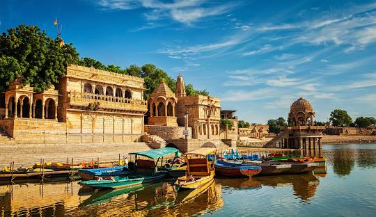
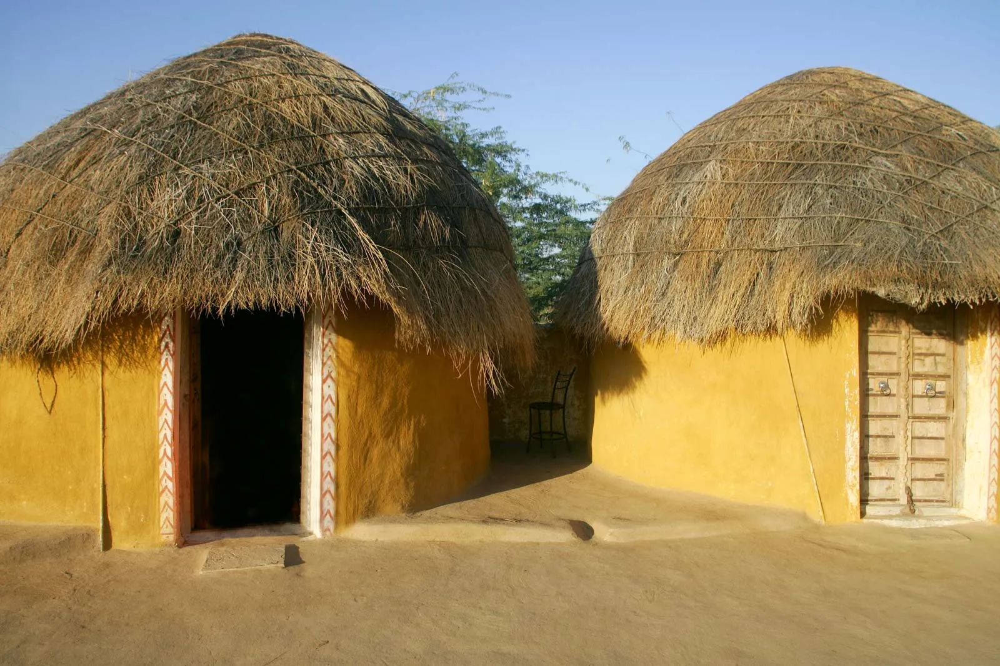

Zillions of superlatives put together won’t exactly define the beauty called Rajasthan. Located in northwestern part of India, Rajasthan is a geographically diverse region that can fascinate you every moment. See colour runs riot in the land of the Kings, battle-scarred forts, places of grandeur steeped in spirituality and history.
A journey to this remarkable place is on every traveller’s wish list. But it needs to be planned with care and imagination
.jpg)
JAIPUR
From the impressive architectures to exquisite handicrafts, the imperial city of Jaipur is gonna surprise you every moment. Packed with history, art and culture, this princely state is a treasure trove of some finest marvels such as City Palace, Jantar Mantar, Hawa Mahal and Museum. You can also enjoy an elephant ride at the gates of Amber Fort. You will be able to witness the luxury of the Indian royalty, temples and havelis, dotted all around these three cities, standing a testimony to the imperial grandeur. The Amer Jeep Safari is one of the exhilarating activities to experience around, which take you to both remote and rural settlements combined with long sandy stretches. During winter season there are plenty of fairs and festivals to participate and enjoy at this place.

JODHPUR
Situated on the boundary of the Thar Desert, Jodhpur is the second largest city of Rajasthan after Jaipur and has been given the name ‘Blue City’, due to the blue-painted houses around the mighty Mehrangarh Fort. From blue houses and towering forts to reflective lakes, Jodhpur offers delightful scenic vistas all around. Jodhpur is also famous for its magnificent historical monuments, temples and palaces. Some of the major attractions around Jodhpur are Jaswant Thada, Umaid Bhawan, Museum and Zoo. Get the authentic Rajasthani village experience in Bishnoi village. Partake in various activities like Pot making, weaving, block painting, and Bishnoi family visit.

GADISAR LAKE
An artificial lake that was build 900 years ago to provide water to Jaisalmer. Because it has a number of ghats, chhatris and Hindu shrines, it is quiet picturesque. But I think nowadays it mainly serves as a gathering place for the locals, who enjoy boat rides in yellow swan and dragon boats. As an overseas traveler, I think there are better sites to visit in the area

MUD HUTS
In Rajasthan, hotter areas the deserted ones, Mud houses are built since mud absorbs heats and keeps the house cools. People make their houses having very thick walls so that the house becomes cool in summer.